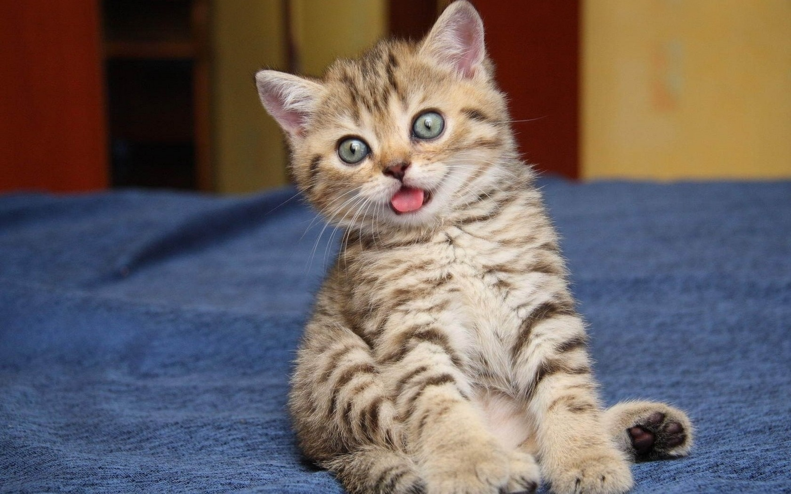

"Это моя первая html страница."
И, конечно же, это будет посвящено...
Котикам 🐈!

Прежде всего, позвольте мне рассказать вам, почему кошки так важны
- Они хорошие охотники и всегда смогут защитить вас от мышей
- Они красивые
- Они умны и независимы, и поэтому у них есть сила изменить наш мир
- Они забавные
- Вы должны просто признать, что они потрясающие
Во-вторых, я собираюсь показать несколько действительно дорогих пород,
чтобы вы могли более четко понять,
сколько денег люди готовы потратить на кошку (потому что кошки - это фантастика).
| Порода |
Цена |
| Саванна |
370280₽ |
| Као-мани |
231425₽ |
| Кошка-эльф |
120341₽ |
Я предлагаю вам заглянуть на эту страницу и прочитать больше о кошках